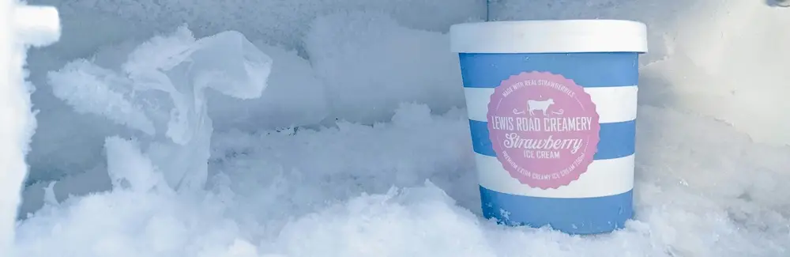

Panduan Lengkap: Cara Menemukan Letak Bimetal Defrost pada Kulkas Dua Pintu
Dipublikasikan pada 13 Agustus 2025

Pernahkah Anda mengalami kulkas tiba-tiba tidak dingin saat libur panjang? Situasi ini tentu sangat merepotkan, apalagi jika terjadi menjelang akhir Ramadan ketika teknisi sulit ditemukan. Makanan di kulkas bisa rusak, dan minuman dingin favorit Anda pun terancam. Salah satu penyebab umum kulkas dua pintu yang tidak dingin di bagian bawah—sementara freezer tetap berfungsi—adalah rusaknya bimetal defrost.
Bimetal defrost adalah komponen vital yang berfungsi sebagai sensor suhu. Tugas utamanya adalah mengatur siklus pencairan bunga es di bagian evaporator. Ketika komponen ini rusak, proses pencairan es tidak berjalan, menyebabkan penumpukan es yang menghalangi sirkulasi udara dingin ke bagian bawah kulkas. Oleh karena itu, mengetahui letak bimetal defrost sangat penting jika Anda ingin mencoba memperbaikinya sendiri.
Langkah-Langkah Menemukan Bimetal Defrost di Freezer
Berikut adalah panduan praktis untuk menemukan bimetal defrost pada kulkas dua pintu Anda:
- Matikan Kulkas: Pastikan kulkas Anda sudah dalam keadaan mati dan kabel listriknya dicabut untuk keamanan. Biarkan pintu terbuka beberapa jam agar bunga es mulai mencair.
- Buka Panel Freezer: Buka bagian dalam freezer dan lepaskan panel dinding yang menutupi bagian belakang atau samping. Biasanya, panel ini dipasang dengan sekrup atau klip.
- Lepaskan Kipas: Di balik panel pertama, Anda akan menemukan lapisan berikutnya yang dilengkapi dengan kipas. Sebelum membukanya, pastikan Anda mencabut kabel kipas terlebih dahulu.
- Temukan Bimetal Defrost: Setelah panel dengan kipas dilepas, Anda akan melihat pipa evaporator. Bimetal defrost biasanya dipasang di sekitar pipa ini, menempel dengan penjepit berupa cable ties atau dudukan khusus. Bentuknya berupa komponen berwarna silver yang dibungkus plastik bening tebal.
- Ganti Komponen (Jika Perlu): Jika plastik pembungkus bimetal terlihat terisi dengan air, maka sudah dipastikan bimetal telah rusak. Anda dapat menggantinya dengan yang baru sesuai dengan spesifikasi kulkas Anda.
Penting untuk diingat, lokasi persis bimetal defrost bisa sedikit berbeda tergantung pada merek dan model kulkas. Namun, umumnya komponen ini berada di area sekitar evaporator, di bagian belakang freezer.
Untuk mempermudah, Anda bisa melihat video di bawah mengenai cara menemukan bimetal defrost pada kulkas 2 pintu merk Sanken. Semoga informasi ini bermanfaat dan membantu Anda mengatasi masalah kulkas anda!